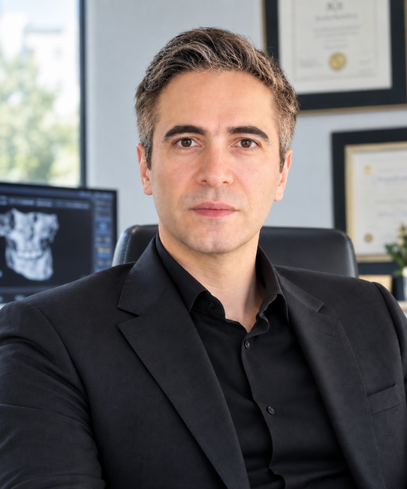

${s.num}${s.en}
${s.title}
${s.text}
یک طراحی پزشکی پرمیوم برای معرفی پزشک، جراحی فک و صورت، بینی، دندانپزشکی، آموزش بیمار و مسیر مشاوره؛ با ساختاری که از امروز برای Django CMS آماده است.

ویدیوی معرفی در ابتدای روایت قرار گرفته تا تجربه از شناخت پزشک شروع شود، نه از یک گالری شلوغ.
${'معرفی پزشک، رویکرد کاری، حوزههای تخصصی، مدارک، سوابق و محتوای آموزشی در یک ساختار منسجم قرار میگیرند. متن واقعی، سوابق و اطلاعات پزشکی باید در نسخه نهایی از پنل مدیریت وارد و تأیید شوند.'}
هر خدمت در آینده میتواند صفحه، FAQ، ویدیو، کیس و دستورالعمل مخصوص خودش را از CMS دریافت کند.
${s.text}
بهجای افکتهای آزاردهنده، سلسلهمراتب محتوا و مسیر کاربر در مرکز تجربه قرار گرفته است.
پروفایل پزشک، ویدیوی معرفی و حوزههای تخصصی.
درخواست مشاوره و اطلاعات لازم برای شروع گفتگو.
راهنماهای قبل از عمل و ویدیوهای آموزشی.
مراقبتهای بعد از عمل و محتوای پیگیری از CMS.
آدرس، شماره تماس، ساعات کاری و مختصات دقیق باید از پنل Django مدیریت شوند؛ از ساختن اطلاعات فرضی خودداری شده است.
فرم رزرو در فاز Backend به Django Form/API متصل میشود.